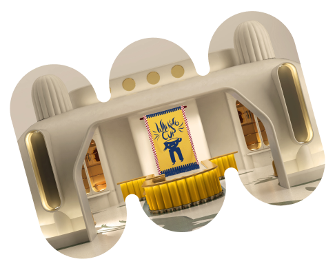
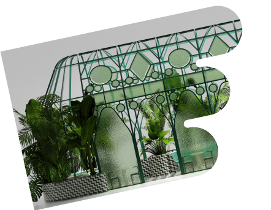
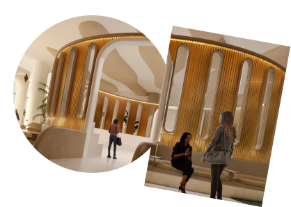
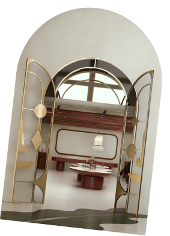

The forum
Tour Guide


- 
- 
- 
- 
Tour Guide
01
컵이 걷는다면?’이란 기발한 상상에서 출발한 하이메 아욘의 아이디어가
빛을 발하는 카페 워킹컵은 현대백화점이 처음으로 선보이는 약 570평
규모의 초대형 카페입니다. 재미와 영감이 가득한 카페 워킹컵에서
엄선하여 준비한 시그너처 메뉴와 음료를 즐겨보세요.
머릿속에서 그리던 워킹컵에 담겨 나옵니다.
 Walking Cup ㅡ 01
Walking Cup ㅡ 01 Walking Cup ㅡ 02
Walking Cup ㅡ 0202
콜로세움은 더 포럼을 관통하는 중심 공간이자 더 포럼 by 하이메 아욘의
상징이 되는 곳입니다. 열린 형태로 설계되어 다른 공간을 조망할 수 있는
콜로세움에서는 다채로운 예술과 퍼포먼스가 펼쳐질 예정입니다.
03
게이츠 가든은 하이메 아욘의 세계관 속 캐릭터들을 조각으로 형상화한
야외 정원입니다. 작가의 중요한 작품 특성인 양감을 유지하고, 문(gate)의
형태를 한 조각들 사이를 넘나들며 이곳에서 산책 이상의 재미를 느껴보세요.
 Gates garden ㅡ 02
Gates garden ㅡ 0204
하이메 아욘의 다양한 굿즈를 만날 수 있는 더 포럼 샵은 ‘더 포럼 by
하이메 아욘’의 탄생 과정을 기록하고 영감을 받았던 사물들을 살펴볼 수 있는
아카이브 공간입니다. 이곳에 담긴 그의 유쾌한 상상을 마주해보세요.
05
하이메 아욘이 더 포럼의 영혼이라고 표현한 그린하우스는 9층 안쪽에 위치한
작은 온실입니다. 외부 공간과 느슨하게 분리된 구조물은 아늑함을 자아냅니다.
반투명한 글라스 사이로 스며드는 빛을 따라 평온한 사색에 잠겨보세요.
 Walking Cup ㅡ 03
Walking Cup ㅡ 03